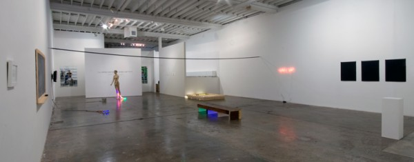
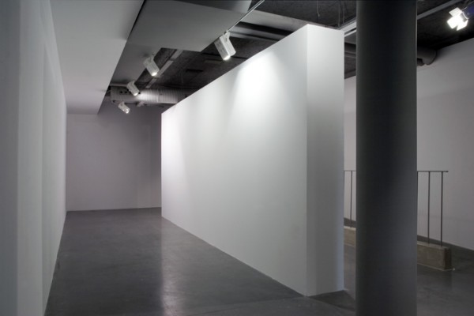
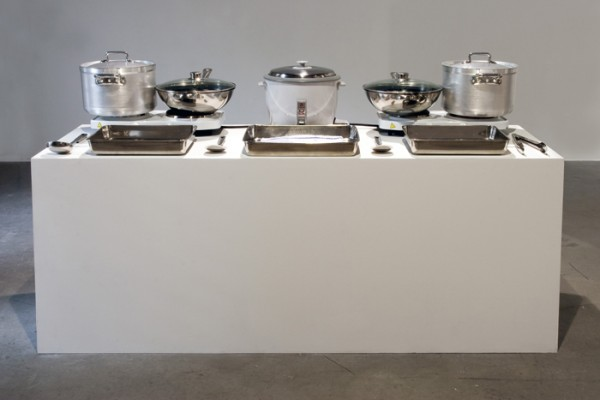

-
Interview with Bert Rodriguez
by Monica Uszerowicz September 23, 2011
Bert Rodriguez is a Miami-based conceptual artist. He has worked with Fredric Snitzer Gallery for the past thirteen years. Emotional Blackmail, a group show featuring his most recent work, opens at the Saag Gallery in Alberta, Canada on September 24th. A member of the now L.A.-based OHWOW arts collective and community and a winner of a Frieze Foundation Commission, his work has also been displayed in the 2008 Whitney Biennial, in Berlin at Sassa Trülzsch and, last year, in Naples at Annarumma 404. While his works range in medium–sculpture, neons, and large-scale, sight-specific installation–their common threads are humorous and critical displays of the art market and the simple examination of the human condition’s complexities. We met with him in his studio in Wynwood to discuss the playful quality of his work, his light-hearted mockery of the art industry, and the economy of gesture.
Monica Uszerowicz: I want to discuss a statement you made in your interview with Charlie Rose. I feel it’s a good reference point. You said if what you’re making is not considered art, if it fails to register in the brain as an expected “artwork,” it’s potentially something bigger, something that can trigger an unusual reaction. The discussion of what “art really is” is very trite, and surely traditional “art” can produce various reactions, but could you speak more to this idea?
Bert Rodriguez: Sure, though I’m afraid of sounding presumptuous, or like I think I’m ‘bigger than art.’ That’s not what I mean. There’s this idea of allowing an object to elicit a response or experience that can exist within any context, whether it’s in or out of the art conversation. I began making art in the first place because I felt like an outsider. After getting introduced to art history, I thought: ‘I can do that, too.’ I began doing whatever I thought seemed like fun to do, then placing it within that [art] dialogue.
It’s become an unconscious part of my practice. All of my ideas come from outside of the art world; they’re designed to filter through that conversation and then come back to the rest of us, to the viewer. The viewer can then be part of this conversation. It’s not a political thing, because I’m not intentionally strategizing to alienate the art world or make it seem pompous. It’s a beautiful place that allows me to do whatever I want. But I want to be conscious of its qualities that exclude a certain part of the world — as if some people can’t be part of the dialogue because they’re not educated in the history. Experience is experience. In its purest form, it has a value and a meaning to anyone, and people can understand it on their own terms. That allows them to evolve, to become self-aware and more articulate — literally an evolved human being.
I like to think about art in terms of cultural or physical human evolution. As an artist, you create an experience that causes a change in the brain. I imagine synapses of the human brain firing off or building connections with other synapses. Your brain is actually changing and evolving and you’re becoming a more advanced creature. I could make some small thing, and whether it’s good or not is irrelevant. That stuff is still happening. It happens everywhere, all the time, really. It is a matter of consciously creating circumstances where you’re exponentially growing the potential for that to happen so people can walk away from the experience with the seed planted. Now it gets to grow inside of them.
MU: I remember reading that you said one of art’s most important, subtle abilities is its knack for taking human experience and condensing it into something small.
BR: Yes. To me, there are generally two different sorts of artists. One makes things that are, on one hand, based on simple ideas. But they take this simplistic gesture and make it seem more complex than it is, in order to give it meaning. They give it value with a grandiose or over-complicated surface. Once you get through that, it’s so simple. An example of this — and he’s not the best example, but he is the most famous — is Matthew Barney. I think his sculptures are a little more effective, because they’re quiet and give you time to breathe with them. But take, for example, his films: he’s built a very esoteric language and system of expression, and it’s almost impenetrable. Of course, we can take something away from this, but it’s very frustrating to be able to see that there’s a specific idea to be gleaned from that, and when you finally get to it, it isn’t so complex.
I hope I am the other artist; it’s the one I would prefer to see out in the world. This person works with complicated ideas that are a part of everyone’s life and experience — I mean, just the idea of love itself is such an intricate thing to navigate. They take these beautiful complexities we all share, then whittle them down to simple, effective objects or experiences. The condensed thing is so unobtrusive that bigger concepts can easily grow out of it. That’s beautiful to me. That’s like magic — taking multi-layered ideas and figuring out how to express them with a simple gesture. It’s the economy of gesture, which is a very important term. I think about it all the time.
MU: That’s an excellent way to encapsulate it. I want to talk to you about I’ll Cross That Bridge When I Get To It. This was the first work of yours I’d ever seen, and I was fascinated by the concept of making a piece every day. I also thought it was a wonderful comment on the art market, since the prices were set before the pieces were made. The humorous suggestions it makes about the nature of a future market seem inherent.
BR: I got that idea because, well, the kind of work that I make is labeled “conceptual,” which is a term I’m also not very comfortable with. What action or gesture isn’t based on an idea, a concept? There has been the historic criticism that conceptual artists are lazy. I typically don’t produce that much work; I focus on sight-specific installations most of the time. I don’t have a traditional studio practice in which I make a bunch of things in a room, then transfer them to a gallery. Something out there has to elicit a conversation that I continue and somehow resolve. It’s more like problem-solving or social anthropology. So I thought I’d challenge myself to not think about the work I was making.
I think my brain tends to lock ideas in there and work through them. I wanted to set up a situation in which I would not have that luxury. I would have to wake up, make something, and put it in the gallery. That was one aspect of the show: to challenge myself and make work in a completely different way, the way a traditional studio artist would. But I wanted to push it to a comedic extreme. Instead of working on one piece for a month, I had to do something every day, nonstop, like a machine. That’s where the title comes from: “I’ll cross that bridge when I get to it” describes my usual way of thinking, not worrying about things until they’re there. I had to constantly cross that bridge.
The preset prices came from my being so hyper-aware of the context of the art market. The work was in a gallery, and galleries are designed to sell art. That is their purpose within the system. It does get a little tiring for me to address that every time I do a gallery show, but I can’t help myself. The fact that the gallery wants to sell it has to be part of the work. It seems unnatural to not include every variable. That’s why I wanted to touch on the idea of the future. I was becoming more successful and gaining a much more critical reputation, so I wondered if I could sell my work, sight unseen, before it was even made — a futures market. I wanted to gauge how much that reputation is worth in some false way. I wanted to see how many of the twenty-six pieces I could sell before they were even made, to see how many people trusted in me. This is what I mean about doing something simple that can expand into larger ideas. The issue of faith is presented in this piece by its nature — having faith in a person to follow through with his promise. If you make a promise to me in the form of a check, I have to promise to give you something that is at least worth that. That’s a relationship, that constant exchange.
MU: You said you get most of your ideas from outside the art world. I think every artist does. But you speak highly of the human mind, the human experience. At the risk of posing such a large, abstract question, what are some of the experiences that inspire you?
BR: That is not the first time I’ve been asked that, and I don’t think I’ve ever answered it well.
MU: Let’s narrow it down to a specific piece, then. We can use I’ll Cross That Bridge When I Get To It. The individual works in that definitely employ the “economy of gesture.” What were some of the other, more humanist ideas you drew from? I remember a note from your girlfriend excusing you from making anything. The note itself was marketable.
BR: My girlfriend was going back to Seattle for the summer that day and I was bummed. That triggered a thought about how people constantly make up excuses to not do their job, because they’re tired, sick, or sad. I wanted to work that in, and it triggered a memory of my elementary school experience. I was a nerdy, sickly child, and often had to skip out on P.E. In those instances, a kid’s mother writes a note asking for him to be excused from the activities. That led me to ask my girlfriend to write a note for me. And that was the piece. It was a perfect stream of consciousness process, and the object itself became interesting. It elicited all these ideas about excuses, denying your role and function in society, and getting away with things, which the art world gets accused of all the time — artists being able to get away with whatever they want. So I worked in a conceptual angle that was funny but still solicited some layers, although it was a very small gesture.
MU: A Wall I Built With My Father and A Meal I Made With My Mother are also very straightforward pieces that suggest several elements.
BR: Right, everything I do can or can’t inspire something. My dad and I have always had a tense relationship when it comes to what I do for a living. I was going to Paris for a residency, which felt very prestigious. I was in a foreign country, doing precisely what parents would want their children to do — making money, traveling. They are signifiers of success and I was a living example of it. But my parents still don’t completely relate to what I’m doing. They’re slightly offended by it because they don’t understand it. I realized I could use that money to fly them over and figure out what to do with them. My dad is a carpenter, my mother’s a cook, and I thought I could apply the language of what they know — with me as a partner — to see if it could alter their perception of it. What they do can subtly and subtly change once it’s in a white-walled gallery, and I wanted them to see this. They’re both very interesting tasks — building a wall is traditionally associated with masculinity and cooking with femininity, politically speaking.
MU: So even politically-charged ideas were naturally ingrained in these actions and their display.
BR: They were growing from those basic gestures. There is also the metaphor of the wall representing emotional and physical distance. Building a physical wall with my father in the real world was a simultaneous act of tearing down the invisible wall between us. It was completely intuitive. That is sort of how my process goes: one small idea triggers another, and then I have this one simple thing I can do that discusses the entire process, along with other subjects I wasn’t even thinking about. This piece ended up suggesting sexual politics and cultural politics, too. My parents came from Cuba to Miami and never left. The idea was to make a better life for their children so they can live more leisurely lives. Now, I’m that person they made the sacrifice for, bringing them to a foreign country and taking care of them. I’m now the parent, using them in these pieces to give them an understanding of it all. The roles reversed via this piece.
MU: Can we go back to the statement you made about not trying to express a sentiment of anti-establishment in your work? You’re certainly poking fun at that establishment — the art market — while you’re positioned within the same industry.
BR: As a kid, my dream was to be a comedian. To me, it’s the highest form of human expression that exists. It is the most vulnerable, the most fragile, the most direct. Good comedians allow everything about themselves to be scrutinized. And they’re putting all of us out there at the same time — they’re pointing out all our weaknesses, vulnerabilities. For me, it’s not about animosity; I just want it to be known that we’re all the same. It’s as if I’m on stage making fun of how stupid I am, then doing the same thing to an audience member. It’s funny and acceptable because you’re within that context. I don’t think anyone’s ever asked me this, and answering the question is what’s making me think of an answer. I think this is a pretty good one. It’s a great example. Once I’m in the art world itself, in that space, I’m able to make these statements. I’m just interested in having everyone — me, the collectors, the viewers — be completely vulnerable and exposed on every level all the time. It’s good to jab at them to get them to open up.
Regarding the humor in my work, I’ve found that laughter — which is why stand-up comedy is so sophisticated and beautiful — opens people up without them knowing. It opens them up to allow for more thoughtful meditations. When you’re done laughing and you’re exposed to all this stuff, you actually start to think. You become more considerate about the thing you were laughing about. I think I’m lucky that whatever knack I had for being funny has made its way into my work to enable that thing we discussed: the cultural, human evolution. It occurs more effectively. Wow, did that even answer the question?
MU: It did. I understand your interest in taking members of different spheres and, through humor, allowing them to connect to something larger. But do you ever wish the market was more egalitarian? Art is a luxury, which can be problematic. When the nuances of any system are put on display by an individual within it, even jokingly, one questions if there’s a way to reconcile the artist’s perception of the institution in which he works with the work he makes.
BR: Well, you have to ask what the problem with that is. When I see artists who are angry at the art market, it seems ego-based. It’s all just issues of control. Artists are so egomaniacal to begin with. I had to learn early on that I don’t have any control over what happens after I make something. There’s no amount of effort or action that’s going to give me control over that thing. I want to evolve in a certain way, or trigger a certain evolution, whether I know where it’s going or not. What happens once it’s out there is for everyone else to figure out. The fact that these objects are traded and commodified, that there is a monetary value for them — well, there is a value for everything. We live in a capitalist society.
On the other hand, I think it is extremely irresponsible for any artist to disregard that aspect of their practice. They must know its rules of engagement and understand it so that they are not taken advantage of. You may not have control over it, but you certainly don’t have to be a victim of it. There shouldn’t be any surprises. Yet I have nothing against it. I love the idea that I get to pay my rent by making weird, esoteric pieces. However, I’m not saying there aren’t other problems. I definitely think art schools, especially master’s programs, are not encouraging exploration and intuitive questioning and processes.
MU: What do they seem to be encouraging instead?
BR: They’re including the market in the conversation way too early. They have gallerists and curators coming through about once a month, doing studio visits with kids. But students are supposed to mess up and hammer things out. Like comedy, it takes years to refine and hone who you are. The other problem is that they’re not as encouraging of intuitive creation, like making something and discussing it afterward. Students need to know exactly why, when and where they are going to make each gesture, so that when it’s complete, it’s a soulless reference to other things. They’re trying to build really smart artists because the art world is constantly under scrutiny for its cultural value. So I think they do this unknowingly, without realizing it, in an attempt to give the work more external validation. But I don’t think anyone has to be a victim of that. The great artists are still going to come out of that system. The weakling artists who wouldn’t be making art after they finished school anyway don’t end up doing it, because they didn’t get in touch with that thing.
MU: It feels inconclusive to end this without asking you about Miami. You’ve seen it grow into a once-a-year-Mecca for Art Basel, and have stated that this negatively impacted the local art climate. I’m hoping you can discuss this further, but I’d also like to know about your general relationship to Miami and its growth. Do you feel you must represent it in a particular way?
BR: This is always difficult. I have some kind of responsibility for it, but my ideas about what that responsibility means have changed. Before, I wanted to live and die here and be the intellectual grandpa of it all. Then Basel showed up and brought us an international eye, and it’s had a lot of positive benefits. But I’ve seen it shift the creative output of this city — it’s made galleries kind of complacent. In terms of the artists, it’s affected their practice in such a way that they don’t see the value of a continued process of making work. Their practice has become market-driven — they only start to make work when Basel is coming. That is not a healthy practice. Like I said, a lot of these kids who are just leaving art school can’t be entirely blamed for doing that. But more successful artists can definitely be blamed. Plus, Basel has created the facade that there’s something happening here, and when you actually navigate and look through it, it’s not there.
I’ve realized that in order to be truly responsible to the place I love, I have to expand beyond its borders in an aggressive way. If you can become a historical relic that comes from and always returns to a particular place, then you’re building a layer of history. That’s what culture needs; it’s what this city needs, because it’s still so young. Given all the crazy things that have happened, like the Mariel Boatlift and an influx of Cubans changing the landscape, it’s experienced so many quick alterations. Nothing’s ever had a chance to ground itself and lay root. I have to gather materials from elsewhere to build upon that. The other artists that come out of here and take that approach will add layers, too. Soon there will be an actual foundation, and a real arts community can be built.